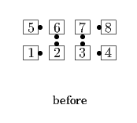
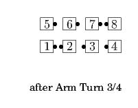
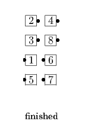
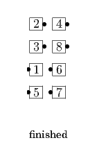

The Pulley
The Pulley
From a 1/4 Box: Triple Cross; Peel Off. Ends in Parallel Two-Faced Lines.
Spin the Pulley
From a Static Set (or from the formation obtained from a Static Set after Heads Step into the Center) or from a Wave between and perpendicular to Facing Couples: Centers or those designated Arm Turn 3/4 (stepping to a wave if necessary); all Triple Cross; all Peel Off. Ends in Parallel Two-Faced Lines.


 

© Copyright 2004-2017 Vic Ceder and CALLERLAB Inc., The International Association of Square Dance Callers. Permission to reprint, republish, and create derivative works without royalty is hereby granted, provided this notice appears. Publication on the Internet of derivative works without royalty is hereby granted provided this notice appears. Permission to quote parts or all of this document without royalty is hereby granted, provided this notice is included. Information contained herein shall not be changed nor revised in any derivation or publication.